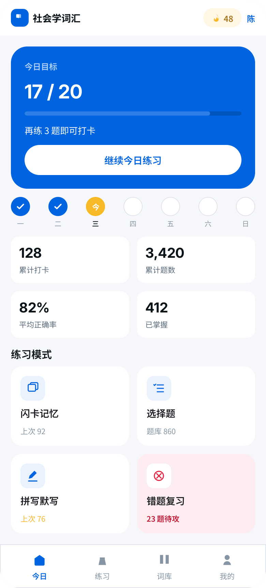
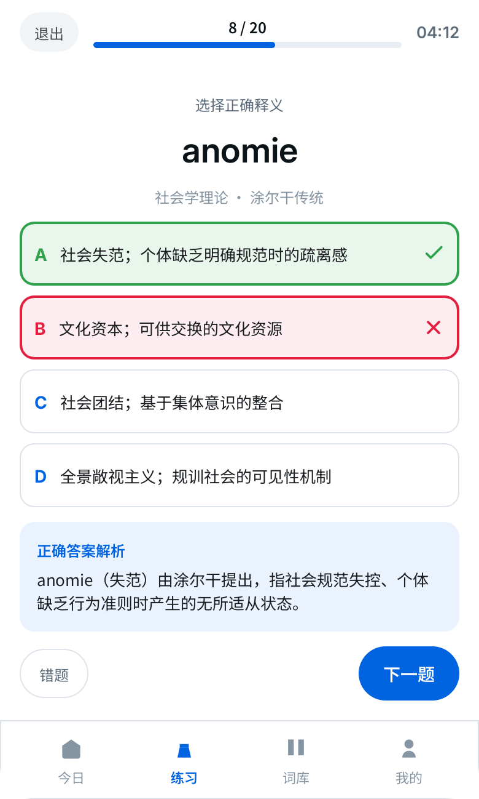
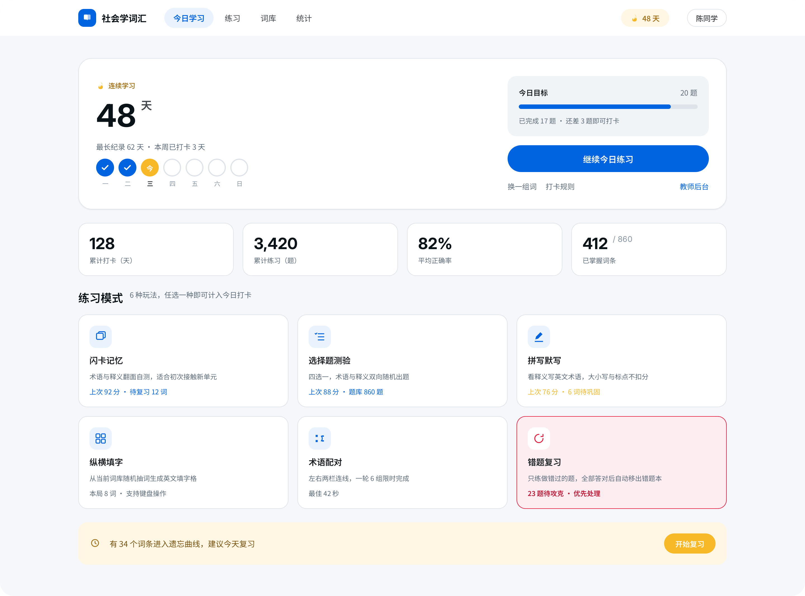
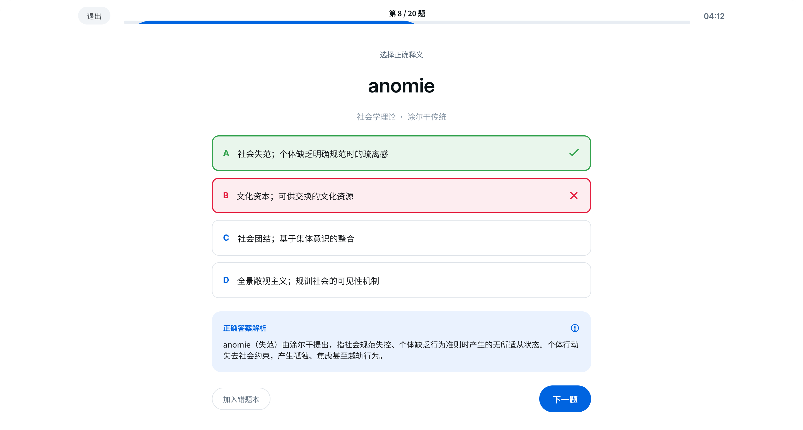

把社会学考点，
练到忘不掉
六种练习方式、真题考点、各国社会数据，一个站，把考点从「见过」变成「会写」。




一个词，怎么练
正面英文术语 + 音标，翻面中文释义和例句。记不住就标「还没记住」，它会按遗忘曲线再找你。
NOUN · 名词
anomie
/ˈanəmi/
轻点卡片翻面看释义
释义
失范：社会规范失效，个体失去行为准则而迷失的状态。
涂尔干用 anomie 解释工业化城市里自杀率的上升。
轻点卡片翻回正面
社会学有一批「长得像、意思各不同」的术语——meritocracy、bourgeoisie、patriarchy……混在一起最容易在考卷上写错。
这个站把每个词拆成「术语 + 音标 + 释义 + 例句 + 记忆线索」，用闪卡、选择题、拼写、填字反复见它几面，直到写 essay 时能直接调用。
meritocracybourgeoisiepatriarchycapitalismsocialisationanomie
六种方式，换着花样见考点
不枯燥，不硬背。同一个词，换着形式见它几面，比抄十遍记得牢。
闪卡记忆
正反面翻，术语 + 释义
选择题
即时对错反馈
拼写默写
听音写词练拼写
纵横填字
在格子里拼词
匹配题
术语配对释义
错题练习
专攻记不牢的
和真题考点，对齐着练
不是泛泛背单词，只练考试真会考到的那部分。
覆盖社会学真题 Paper 1–4按考点切题，历年真题怎么考，这里就怎么练。
理论流派与学者人名表韦伯、涂尔干、马克思……谁提出、属于哪一派，一次理清。
各国社会数据看板出生率、基尼、贫困率……写 essay 直接当论据。
写 essay 要的数据，现成有
各国社会指标实时拉取（World Bank 接口），背词之外，还能顺手给论述文找论据。
示例：部分国家基尼系数（数值为示意，以站内实时数据为准）。
背了，就不让它忘
连续打卡给你节奏，间隔复习在快忘的时候把你拉回来。
0天连续学习（示例）
间隔复习：标记的难词会按遗忘曲线安排回看，不用自己记「该复习哪个」。